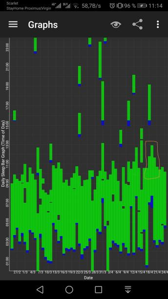
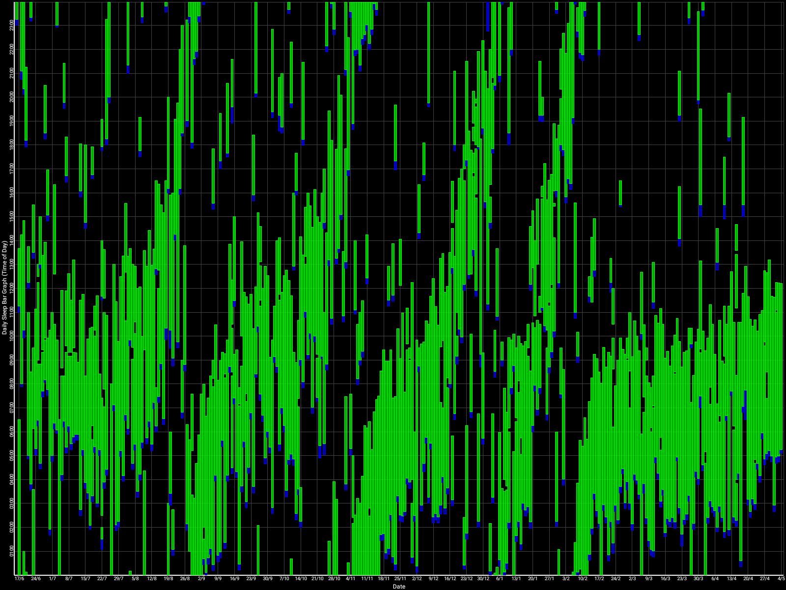
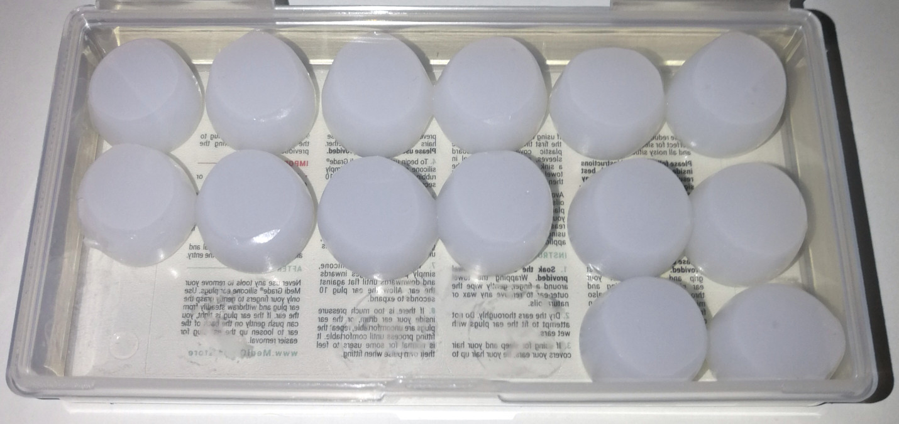
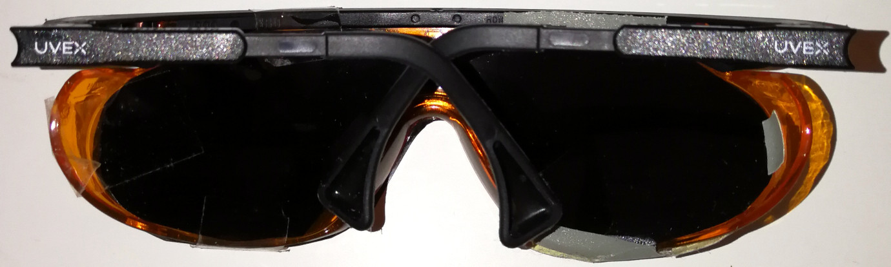
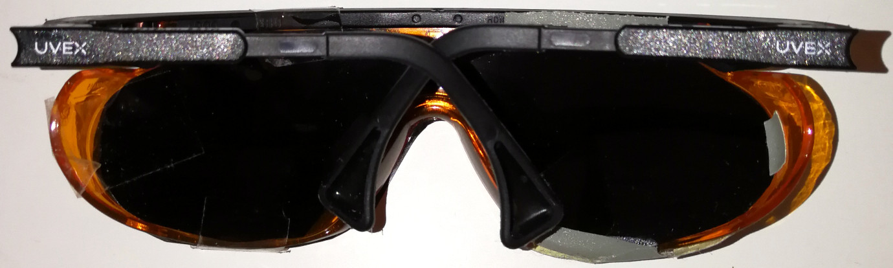
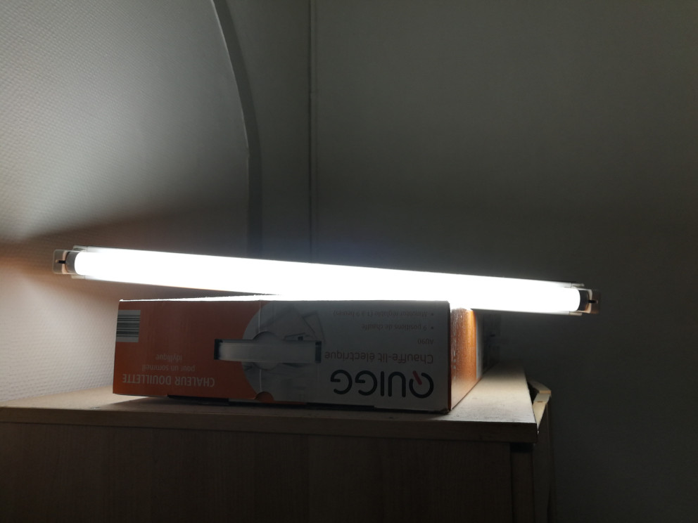

SleepNon24LiDACMel
Créée le samedi 08 février 2020
LiDACMel therapy
Foreword
This is an experimental protocol for entrainment of treatment resistant sighted non24. This will evolve over time, as this protocol is still under experimentations. This was not tested yet on more than one subject.
Check out later this article for updates, including: whether keto diet is necessary, blue blocker sunglasses, more accurate circadian rhythm estimation using continuous body surface temperature with affordable clinical-grade wearables.
For the moment, I advise to skip the therapy section unless you are really curious, and rather go directly to the TROUBLESHOOTING section, which aims to answer the most common questions about the various therapies for non24.
Also, this therapy was designed for sighted non24. Since the tools influencing the circadian rhythm are the same for all humans (and actually most research was done on typical sleepers but are applicable for people with circadian rhythm disorders), some parts may also be applicable to DSPD with some changes (mostly that the goal of DSPD is to phase advance gradually, whereas non24 aims to freeze the circadian rhythm in place with a treatment-induced daily phase advance that counteracts the natural intrinsic daily phase delay).
DISCLAIMER: I do NOT recommend anyone to try what I did, it is still very experimental and maybe risky and I have yet to confirm whether all the things I did are really necessary or not, and the safety is not guaranteed. If you do try, you do it at your own risks (please ask a physician to follow you at least!).
This draft was written by Stephen Karl Larroque in 2020.
Summary
TL;DR: I have a non24 circadian rhythm disorder, I followed a combination therapy I designed, and this is the result:

Zoomed out, here is my full sleep diary over 1 year, with the working therapy at the end:

I was entrained for 2.5 months, which is significantly much more than anything before (all previous attempts failed after 2 weeks).
Before I tried: 1- melatonin only, 2- light therapy lamps + melatonin, 3- strict ketogenic diet only with timed meals (time-restricted feeding), 4- intermittent fasting (or even complete fasting for a few days), 5-carbs-only diet, and of course strict sleep hygiene, but none of those worked.
My latest protocol, which worked for 2.5 months at the time of this writing, is named LiDACMel, which stands for: Light therapy at wake-up, Dark Therapy in the evening, Avoid Carbs and Melatonin mixup, and take exogenous instant-release Melatonin based on DLMO/core body temperature.
This therapy can be summarized in 3 points:
- Light exposure control: light therapy glasses at wake-up (or optimized light angle to stimulate ipRGCs in the nasal retinal hemiregion) to phase advance. Light therapy must always be combined with dark therapy in the evening (ie, avoidance of light exposure to avoid unwanted phase delay).
- Melatonin instant release pills, taken at a time calculated relatively to DLMO. This both consolidates sleep (ie, ensures you sleep your full night and not wake up too early or in the middle of your night causing unwanted sleep deprivation) and phase advance. The effect is additive with light therapy.
- Food timing and composition control: reduce/minimize carbohydrates intake, and avoid them after melatonin intake. In the experiment above, I was half the time under a strict ketogenic diet, and half under a balanced diet including carbs.
Here is a quick practical run-down of the procedure for non-24:
- Preparation the week before doing this new therapy:
- Wait for your sleep to cycle and come close to the ideal time you would like to freeze in-place. Indeed, there is no proven way to cycle backward (ie, wake up earlier and earlier), but if you phase advance enough, you'll eventually reach the wake-up time you would like (this is called a phase delay chronotherapy). Start the next steps when your wake-up time is around 2-4h before the ideal time you would like to wake up.
- sleep according to your own natural rhythm for a week. If necessary, buy an eye mask and ear plugs to prevent external factors from disrupting your sleep. Write down your wake-up time every day in a journal (use Sleepmeter on Android).
- After a week, calculate the average wake-up time over the last 3 days. Subtract the sleep duration you need to feel the most refreshed after sleep (usually 7-8h for adults) + 2 hours from this average wake-up time to compute the DLMO (dim-light melatonin onset). Example: if the average wake-up time over 3 days was 6am, and you need 7h of sleep to feel refreshed, your DLMO is at 6-7-2 = 9pm. Subtract 2-4 hours from this DLMO time to get the ideal time window to take melatonin. Using the previous example, the melatonin intake window would be between 5-7pm.
- After the week of natural sleep, use now this combination of therapies everyday:
- Kickstart your melatonin production with a melatonin pill and hence sleep and help its consolidation: take melatonin in instant release form (the dosage is not important, can be as low as 0.1mg or up to 3mg, but only doses > 1mg can produce hypothermia and hence greater phase advancing effects). What also matters is that it dissolves in sublingual instantly - if you can't find an immediate/fast release melatonin, you can use long/prolonged release melatonin but crushed to avoid the coating (parent compound) from delaying the melatonin intake) during the ideal melatonin window time you calculated before. Melatonin not only helps with phase advance, but also consolidates the 2nd part of your sleep, so you are more likely to sleep your full night rather than be woken up earlier because of various disturbances.
- Prevent light from interfering with melatonin production by using dark therapy blue blocker sunglasses 2-4h before natural bedtime: light can suppress both melatonin and shift the circadian rhythm (independently of whether melatonin is suppressed, see also here and here). Suppressing melatonin by light can reduce the carry-over hangover when taking a supraphysiological dose because of the photic history (see also here) and because light eliminates melatonin faster than natural elimination. Both the intensity and color of light (see also here and here) matter in circadian rhythm shifting and melatonin suppression by modulating the ipRGCs receptors as rods and cones don't matter (see here for intensity, and here and here for color), hence you need to avoid bright lights in your biological evening, both by dimming down all lights, and by filtering blue light. A blue blocker sunglasses such as UVEX amber glasses and manually tinted in black is a very easy way to do both without any more hassle. If you don't have access to such glasses, a more inconvenient and less reliable but working alternative is to modify the environment: dim down / switch off all lamps (including your computer screen intensity) and install blue light filters softwares on your computer (advised: LightBulb or f.lux) and smartphone (Twilight on Android). If you have a changing color LED lamp (eg, Living Colors), use it as a bed lamp by setting it to full red color (the blue LED should be switched off if you selected an appropriately full red color). Why start the dark therapy 2-4h before target bedtime? Because melatonin takes 1-2h to produce drowsiness effects from its DLMO point, and it takes 1-2h for melatonin production to reach it's DLMO level from the moment it starts its production (or from when the light inhibition/exposure is stopped). Hence, the dark therapy should be started 2-4h before the natural bedtime. Whereas light therapy phase advances your circadian rhythm (ie, you wake up earlier), dark therapy prevents unwanted phase delays due to light exposure, which concretely makes you feel more fatigued at the wanted time.
- Prevent food/glucose from interacting with melatonin: after you take melatonin or when it's too late and you think melatonin is produced by your body, do NOT eat any glucose, and if possible any calories at all. 0% drinks are allowed. Research has shown that glucose is processed worse when melatonin is present in the body, which can lead to metabolic disorders such as obesity and diabetes, and we suspect circadian rhythm disorders. Hence, it is advised to plan meals at times when melatonin levels are low (see also here). This strategy is kind of, but not exactly like, a time-restricted feeding schedule, but instead of restricting by time, you restrict by when you expect melatonin in your body.
- Use an eye mask and ear plugs (or a white/pink noise machine) to reduce the highly detrimental effect of noise and disturbances on your sleep efficiency. This is NOT optional, having any disturbance during your sleep will annihilate any effort you can undertake otherwise! An inexpensive silk black eye mask will do, and outer earplugs in silicon are advised as they are much more comfortable than inner earplugs (they reduce the proliferation of bacteria and hence itchy ears).
- Mind the ultradian cycles (20 minutes "gates to sleep" every 1h30) and the dopaminergic forbidden zone of sleeping
- Use bright light therapy with an angle towards your nose to stop melatonin production and increase vigilance and mood: use light therapy glasses such as Luminette for 1h directly as soon as you wake up. If you have troubles turning on the light because it's too bright and burning your eyes, try first the lowest intensity with your eyes closed for a few minutes. Your eyes will adapt, even if your eyelids are closed. After a few minutes, you should be able to open your eyes. Then progressively ramp up the light intensity to the highest level. If the glasses turn off before 1h, turn them on again to continue. TODO REWRITE: any bright light should be sufficient, even cheap white light neons, but need to target either the parafoveal or nasal region of the retina as these regions much more effectively suppress melatonin, and to use at wake-up. Bright light therapy is even more important if you use more than 1mg of melatonin (supraphisiological levels), because there will be residually higher levels of melatonin next morning that will cause drowsiness, and bright light therapy can forcefully inhibit that. Light is likely the most powerful tool we have to control the circadian rhythm, as it was shown in animals that light can entrain even without a pacemaker. Light also increases serotonin levels and hence vigilance, since light impacts both the circadian rhythm C and the homeostatic (sleep pressure) process S (which makes sense since cordycepin, an adenosine analog and adenosine being the biological basis of the homeostatic process S, has a huge impact on the circadian rhythm C, showing that both processes are inter-dependent). Hence, the control of light exposure using a combination of light therapy and dark therapy, through the modulation of both light intensity and color, is an optimized therapy. During the rest of the day, after the wake-up light therapy, it is advisable to continue to be exposed to bright light throughout the rest of your natural day, in order to optimize photic history, as it was shown that 6h of bright light exposure (whether continuous or intermittent) shifts the circadian phase way more than only 1h of light exposure, and with continuous light suppressing melatonin more than pulsed light (hence continuous light is likely more efficient to increase vigilance). See also: https://www.reddit.com/r/DSPD/comments/glhlu8/when_i_go_to_sleep_doesnt_matter/fr74sge?utm_source=share&utm_medium=web2x
- Follow a strict ketogenic diet with timed big main meal. The effects will start only after you reach the highest 2 levels on the ketostix (measurements of ketosis from urine):
- Timed big meal, which is to take your main meal at the middle of your circadian rythm's day, synchronizes your circadian rhythm thanks to your intestines regulation of the circadian clocks (it's the biggest producer of melatonin). You can eat a breakfast, but it should be relatively small, and there should be only one big meal during the day (eg, the sort of meal that you feel like you ate enough for the whole rest of the day - but be careful of not over-eating!).
- Reduce the quantity of consumed carbohydrates, as each 1% reduction improves the metabolism and reduces risks of obesity and metabolic disorders, including sleep. Following a strict ketogenic diet is kind of the extreme of this strategy, which has the additional advantage of reducing the sleep duration (by one ultradian cycle, so about 1h30-2h) while improving sleep quality (so there is no loss in sleep even if the duration is smaller, which eases the maintenance of a stable sleep), reduce hunger (eases the avoidance of the detrimental melatonin/insulin/carbs interaction in the evening) and increases the time resetting effect of food (by increasing the intestines time clock gene expression and switching off liver's time clock genes and melatonin production - in other words your peripheral circadian clocks will rely more on your food timing, which is a lot easier to control than other zeitgebers). A strict ketogenic diet is a diet with <=50g of wet carbs (sugar+fibers), including <= 20g of sugar carbs per day. This can be tested with a simple urine test using the ketostix. Note that a ketogenic is mostly composed of fat, and only mildly with proteins, do not compensate for the lack of carbs by eating too much proteins, as they will get converted to carbs, preventing you from reaching the highest levels of ketosis as indicated by the last 2 colors on the ketostix. If you choose to do a ketogenic diet, plan to start it ahead, at least 2 weeks before the rest of this protocol, as to have enough time for your sleep to adapt and stabilize with the new diet. Also make sure to use vitamins and minerals complement to avoid the risk of electrolytes insuffisance contributing to the dreaded keto flu. The most effective version of my therapy was with a strict ketogenic diet, so you should probably try that at first and if this works you can then try to transition back to a more complete diet with carbs.
- Optional but strongly advised: take multivitamins and minerals, including B12, supplementation every morning. B12 vitamin is known to potentiate the magnitude of the effect of light therapies. Deficiencies in other vitamins and minerals may impact mood (eg, magnesium), neurology (eg, vitamin B6) and the circadian rhythm, so by taking a multivitamins and minerals supplementation you eliminate these potential factors on your sleep easily. Plus, if you do a strict ketogenic diet, this supplementation will help avoid electrolytes imbalance (but you may also need to supplement in salt).
- Continue this combination of therapy strictly (respect the hours and use melatonin and light therapy everyday!) for a few weeks. The first week you should see a reduction of your phase delay, and the next week your circadian rhythm (in particular your wake-up time) should be somewhat stable, and it will get more stable along time as you continue with the therapy. The time windows need to be respected, but a slight change of +-30min from day to day is OK in my experience (eg, taking melatonin 30min later or earlier).
Disclaimer: I thorougly designed and tested this protocol on myself after several failed variations. I do not guarantee that this protocol will work for you, or that all steps are necessary, but I tried to test as many variations as I could by eliminating or changing some steps, and this is the only combination that worked so far, so keep that in mind if you partially try this protocol, if you skip some steps this may reduce the effectiveness (or not work at all). But even if you follow all steps, this may not work for you either. I share this protocol because it should be safe to try and because it was highly effective for me, so I believe it may work for other non24ers with the same etiology (genetic mutation of MT2 receptor?) as I have.
Note: the 2 optional steps were done in my protocol, but I am not sure they are necessary. The other 4 steps are likely essential.
Note 2: As you will read below, you will see I initally started this protocol by having another step: to follow a strict ketogenic diet as is done for epilepsy. Although this may have helped to induce the freezing in-place of my circadian rhythm, I could progressively phase it out and switch back to a diet with carbohydrates with my circadian rhythm remaining stable. If you follow the steps above and still find it difficult to maintain a stable rhythm after a few weeks, then you may consider to also switch to a strict ketogenic diet (while still following all of the above).
Note 3: in addition to B12 supplementation, I took supplementation of a lot of other vitamins and minerals including magnesium (because of deficiencies induced by the strict ketogenic diet). I will later investigate whether these vitamins have a beneficial impact on the therapy, but from the academic literature, there is no evidence apart from B12 effect on the magnitude of the effect of light on the PRC curve.
Long version with details on the protocol I followed and the rationale behind
As some of you may know, I am currently trying to investigate more thoroughly what's biologically causing the non24 circadian rhythm disorder in people with sight. I am not a specialist, but my background as an (early career) neuroscience researcher certainly helps me in reading the scientific literature.
I have been diagnosed as a non24 for the first time 10 years ago now. The only thing I knew was that I felt like I was getting sleepy 1 hour later everyday, and that my life was cyclic: I was quite OK for one month, then the next I was a total wreck (missed most of my school classes, had very weird social behavior, difficulties to concentrate, tired all the time and crashing to bed as soon as I got back home after school even if it was early like 5pm, etc). I had melatonin treatment at the time, but it only helped for a short time window (a few weeks), then my cycle started drifting again. I was still healthy at the time so I continued to do my stuff, until recently when my health finally degraded due to chronic sleep deprivation, prompting me to tackle upfront my circadian disorder issue, in the form of academic literature reviewing and monitoring, self-experiments and a draft of a paper if one of these experiments work.
I recently tried multiple treatments, some advised by physicians, some more experimental:
- melatonin only,
- light therapy lamp (medical grade, brand Beurer) + dark therapy (blue light filters, blue blocker glasses) + melatonin,
- strict ketogenic diet only (+ dark therapy),
- full carbs diet only (+ dark therapy),
- intermittent fasting (or even complete fasting for a few days), with and without dark therapy,
- time-restricted feeding with big meal timing (with carbs), with and without melatonin.
- serotonin via 5-HTP, either in instant release in the evening to help to sleep, or in long release form in the morning to level up the fluctuation in energy levels.
But none of those worked (you can see on the sleep log above, I (re-)tested them in the months prior to now, so the months on the left where I mostly free-run were when I tried these treatments, which for some slowed down a bit the delay but did not stop it completely).
I have attempted another approach, a combination therapy combining multiple zeitgebers (ie, time cue) resets. It's a combination of melatonin, light therapy glasses, strict ketogenic diet, timed big meal and avoiding melatonin/eating mixup (ie, no calories/carbs allowed after taking exogenous melatonin). In other words, a combination of the various things I have tested in the past, but altogether instead of separately. Here are the details of this protocol:
- Take exogenous melatonin, 1.9mg, in instant release form (dissolves with saliva). Brand is Valdispert Melatonin 1.9mg (package with red bands). The timing of the intake is very critical, I followed the latest recommendations to take 1 pill 2 to 4h before DLMO (the time point at which the body naturally produces endogenous melatonin), which itself is 2h before *natural* bedtime. Since I am non24, my bedtime changes all the time, so it's difficult to estimate the DLMO like that, and in addition some studies show the DLMO can be timed differently in people with circadian rhythm disorders. But the wake-up time is actually a good predictor, so I calculate DLMO = wake-up time over previous days - sleep duration I need to feel in good shape (6h30-8h on average for adults < 50 years-old). For example, if I woke up around 9h the previous days, my DLMO would be 9-8-2 = 23h. Then my ideal melatonin intake time would be between 19h-21h. Again, although taking melatonin under this time window should always have an effect on the circadian rhythm, the timing in this window matters, taking at 19h will not produce the same effect as taking at 21h or at 20h, there is a precise optimal time point where melatonin will have the greatest effect on you. The most practical way to know is simply to try to take melatonin at different timing, and see at what time you get sleepy the earliest. For me, it was at 20h30 (to wake up at 8-9h in the morning), although initially I started to take it at 19h30, and maybe I will try some other timings in the future to maybe phase advance even more.
- Light therapy glasses directly at wake-up, use the lowest intensity (500 lux is enough) for a full ultradian cycle (~1h30). If you are getting headaches or dizziness feelings, the light intensity may be too high, try a lower intensity. I use Luminette v3, but Luminette v2 should be fine too (do not use v1 as they have only the maximum intensity light, no other level possible). A bright enough neon (500 lux is enough) placed appropriately so that the nasal part of your retina is exposed at wake-up should be enough (TODO add study). (TO REMOVE: You can use another light therapy glass as long as the light has blue light and clinical trials backing up its effectiveness). Do NOT use light therapy lamps, they do not work because they require you to stay very up close for a long time, so it's highly uncomfortable and thus unlikely you will ever properly use them. Light therapy glasses solve this issue with their form factor. In practice, it's difficult to use light therapy glasses directly at wake up, it will blind you and hurt your eyes, but I have found a method: wear the glasses, close your eyes, and light them on, with the lowest intensity first. This should feel very like you are taking a nap under the sun. This will allow your eyes/pupils to adjust to the photic input, even if your eyelids are closed. After one or two minutes, you should be able to gently open your eyes, and then without any issue keep them open while the light is still on. Then, whenever you feel comfortable enough, raise up the light intensity progressively, to level 2, and then after a few more minutes, to level 3 (the maximum level with Luminettes). Then stick with the light therapy until the glasses switch off by themselves (about 20min at maximum intensity, 30min with level 2, 45min with level 1). At this point, you should feel fully awake, if that's not the case, you can switch the glasses back on to continue with a 2nd light therapy session. I often do this, and during the 2nd session I often do the opposite to the 1st one: I restart with the highest intensity first, then progressively as I wake up I turn the intensity lower and lower. With these, you should be fully awake after minimum 20min if 1 session is enough, or max 45min-1 hour if you need 2 sessions.
- Strict ketogenic diet: nothing special here, you can read other guides on how to do such a diet, but note we are here talking about the strict version, which means less than 20g of wet carbs (without fibers) and less than 50g of total carbs (with fibers). The diet must be followed everyday, no "skip day" allowed. I have found that 0% drinks (such as Cola 0% or 0% syrup) are very helpful to quench the need for sugar. You can use ketostix, which are paper bands that get colored with your urine, to measure your degree of ketosis. During the whole month, I was between the highest 2 levels (0.8 g/L to 1.6 g/L). The effects on the circadian rhythm only started after a week after I reached the highest 2 levels on the ketostix, in other words when I was in ketosis. Make sure you do not suffer from electrolytes imbalance by complementing your diet with essential minerals (and vitamins) the first few weeks.

- Time-restricted eating with a big meal: the idea is that you take only one big meal at a specific time in your day, about in the middle, so you don't wait too long to eat but in the evening you don't go to sleep to much after to have the time to feel hungry again. For example, for me to sleep between 1h-4h, I ate between 15h30 to 17h30. Now, having only one big meal does NOT mean you can't eat the rest of the time! In the morning, you can perfectly well eat, but in small quantities. However, I have noticed (but maybe wrongly) that eating after the big meal tends to mess up with my sleep, so I rather eat small meals before than after. Also, the meals were all strict ketogenic in my experiment. Concretely in my case, in the morning I could eat small slices of salami or chicken that are usually used with bread but bread is not possible with keto diet so I hate them on their own. Then throughout the day, if I need to get a quick meal on the go, I can eat the same. Then between 15h30 to 17h30 I ate my big meal, which consisted of homemade chicken kebab with tartar sauce (some of them are quite low carb, check the bottle's notice to know if that's the case), cabbage and mushrooms. Then, after this meal, I generally did NOT eat anything, and the few times I did, my sleep was delayed, although I am not sure that's the reason why, but I highly suspect this has an impact. However, 0% drinks are still allowed until you go to sleep, and even after you take melatonin. Also, the time-restricted eating with a big meal may potentially only work with strict ketogenic diets, because with carbohydrate diets, there is a risk of feeling a postprandial sleepiness, which is when the parasympathetic system activates after you eat well and pushes you to sleep (that's why it's nicknamed the "digest and rest" system). In my experience, that's clearly the case, even when eating a big ketogenic diet, I may feel slightly sleepy but never enough for me to actually take a nap, whereas before with a balanced meal I often went to take a nap (or I was a wreck for a few hours until the postprandial sleepiness went away).
- Never eat when you have melatonin in your body, avoiding melatonin/insulin/carbs interaction: after I take the melatonin pill, i do NOT eat anything, nor drink or consume anything that has any calories/carbs in it. I am unsure whether it's the carbs that matter, or any calorie altogether, but in my case, past the melatonin intake time, I only consumed 0% drinks. Also in the morning, I do NOT eat before I use my light therapy glasses (ie, not until I'm sure melatonin was inhibited in my body). Eating while melatonin is still produced in the body is indeed linked with an increase of insulin resistance and the risk of developing metabolic diseases such as diabetes and obesity (and likely Alzheimer). That's the case for just anyone, but it's even worse for people with circadian disorders as they often have a mutation in a melatonin receptor that worsen the detrimental effects of melatonin mixup with carbs. Side note: I hypothesize that the postprandial sleepiness may be worsened in people with the melatonin receptor mutation, because the insulin resistance and glucose profile go up faster in these people.
- Listen to your body's signs of tiredness, and respect your ultradian cycles: TODO see below, also try to match circadian and ultradian cycles peaks.
Note that the goal of this therapy is not really to make you wake up earlier or at anytime you want, but rather to phase advance the circadian rhythm enough to counterbalance the natural tendency to phase delay and thus freeze your wake up time and bedtime at the current time. So I had to wait until my circadian rhythm was more or less in phase with the time I would prefer (eg, wake up between 6-9am), and then I would start this protocol.
Ok so now I'm going to dwelve into the rationale behind this therapy, in other words, why and how it may work. Indeed, I already tested separately nearly all of the elements in the combination therapy, but they did not work on their own. Why? There are two possible reasons:
- Either it's simply because I cumulated the phase advance of all these strategies, and so they added up and provided enough phase advance to counter my natural tendency to phase delay because of non-24.
- Or there is a synergistic relationship between some or all of these elements, which allows to produce a "freezing" effect on the circadian rhythm.
In fact, these two hypotheses are not necessarily exclusive, they can both be true: maybe to stabilize a non24 circadian rhythm to a 24 rhythm, one needs to both phase advance enough AND fulfill certain conditions for this phase advance to be constantly effective. In other words, to both freeze the circadian rhythm and phase advance.
What could be the basis behind this synergistic effect? Here are some leads from the academic literature:
- Melatonin can be used to trigger melatonin production earlier if taken before the DLMO (ie, before the body produces endogenous melatonin, else if you take after this is useless as the body is already full of melatonin). This is well known in the scientific literature. But lots of people noticed that although they may sleep earlier when taking exogenous melatonin, they will either simply sleep longer and wake up at a later time as if the melatonin did not help at all, or they will wake up but they will feel very sleepy and have great difficulties to feel fully awake. This leads to my current hypothesis: exogenous melatonin can trigger the production of endogenous melatonin, but not reduce its duration, so that melatonin production continues in the morning as usual. In other words, melatonin can only change the bedtime, but not the wake-up time. This also explains why we may wake up earlier but not feeling good at all, because sleeping earlier with exogenous melatonin allows to effectively sleep with enough sleep quality (we predict that there is no change in sleep quality when we take melatonin and wake up earlier), and hence it resets the homeostatic sleep pressure process S (eliminating adenosine), and this is what makes us possibly wake up, but the body is still producing melatonin because the circadian rhythm is NOT synchronized with the melatonin start production time. In other words, starting melatonin production earlier is not enough to change the circadian rhythm. Here is a schema to try to clarify that:
- Light therapy glasses may be the other side of the coin, the much needed complement to melatonin: where melatonin before DLMO kickstarts melatonin production earlier and hence makes you sleep earlier, light therapy glasses are what allow to inhibit/stop melatonin production at wake-up. To complete my hypothesis as outlined in the previous point: to change the circadian rhythm, one must affect both the bedtime AND the wake-up time, otherwise affecting only one of either will fail in changing the circadian rhythm sustainably. Also light therapy glasses must be complemented with dark therapy: in the evening, a few hours before sleeping, avoid bright lamps, or even use red lights, and use blue light filters on your computer (set them to the max reddish coloration!) and also dim the intensity (you can use softwares like Dimmer). I also use blue blocker glasses from UVEX from time to time, but I don't need them so much now that I sleep during the night, I can just switch off the lamps, as these glasses are more useful when you are desynchronized and sleep during the day and you need to block off natural light from delaying further your sleep or messing with your sleep quality by making you sleepless when you should be sleeping.
- The strict ketogenic diet may have a "circadian rhythm freezing effect" as I call it. Why? Because although the suprachiasmatic is the organ that is specializing the most in melatonin production, in fact most of the melatonin is produced by various other organs, and in particular by the liver and the intestines. In addition, we know that the strict ketogenic diet has an effect on sleep in humans, slightly reducing the duration and changing the sleep stages, but with in fact an improvement of sleep quality (while we would expect a decrease given the shorter duration). Finally, it was shown in animals that the strict ketogenic diet has a differential effect on the liver and the gut's clocks (because all organs have their own clocks which contribute to the overall circadian rhythm, and the guts and liver are among the most important since they also regulate body temperature, which is known to be synchronized with the circadian rhythm). More precisely, the strict keto seems to deactive the liver's clock (the liver being a big generator of melatonin and regulated by carbohydrates/insulin, so keto deactivate this way of melatonin production) whereas the gut's clock gene expression is increased (so the circadian rhythm relies more on the gut's clock, and hence on the timing of food intake?).
- This leads us to the timing of food intake: because the strict ketogenic diet may switch off the liver's clock, and make us more reliant on the gut's clock, the timing of food intake may be very important. Scientists know that meal timing can change the circadian rhythm of rats, and the bigger the meal, the more it will synchronize their clock.
- Finally, since it's now known that melatonin has a detrimental interaction with glucose (which is not so strange since we know that liver manages both insulin from glucose levels, and melatonin) that leads to increased insulin resistance and metabolic disorders, and that people with circadian rhythm disorders more frequently have a genetic mutation that makes this detrimental interaction worse, then it only makes sense to assume that this melatonin/glucose interaction can also maybe impact the circadian rhythm. So not only is it safer for health to avoid eating or drinking caloric products when melatonin is still in non-negligible levels in the body, but it may also help with maintaining the circadian rhythm stable.
In summary: I think the main components that allow my circadian rhythm to be stabilized are the melatonin before DLMO to change the bedtime, light therapy glasses at wake-up to inhibit melatonin, and the diet certainly has a facilitator effect. So I don't think the diet in itself allows me to be stabilized, but it helps me more easily control using melatonin and light therapy. In other words, diet might be a potentiator. But what exactly is doing that in my current diet? This is what I will investigate next, by stopping the ketogenic diet but keeping the other 2 parameters intact (big timed meal + no caloric meals nor drinks after melatonin onset).
Note that I do not use any other treatment during this month, nor any other compound. For example, coffee. It can be very useful to reduce the sleep pressure (sleep homeostatic process S in Borbély's model of sleep), because it reduces the levels of adenosine, but coffee can NOT do anything to help with the circadian rhythm process C.
Note also that my circadian rhythm under this combination therapy could sustain unexpected events and changes in my daily routine. Usually, with any other treatment I tried so far, any unexpected event usually ended up accelerating my phase delay, but here even if sometimes I had to sleep/wake-up later, in a matter of days I could slide back in place to my stabilized bedtime and wake-up time.
Safety/Risk analysis:
- Apart from the mixup with glucose, melatonin is generally considered a safe molecule, being a major antioxydant of the body along with many other health maintenance roles such as male reproduction and also female reproduction (see also here, here and here with not only melatonin but circadian cycle impact on fetal and placenta physiology), and is known to be a major neuroprotector and likely a major anti-cancerigen. It also isn't addictive.
- Blue light in blue therapy glasses may be dangerous for the eyes, but Luminette and a few others constraint the blue light spectrum to a reduced spectrum and intensity that should not be dangerous at all, and these glasses are certified by the stringent european union safety standards.
- long term meat-based ketogenic diet may lead to cardiovascular issues and premature death, but vegetarian/plant-based ketogenic diet seems to be on the contrary slightly positive for health.
- timed meals are shown to be good to regulate glucose and reduce the risk of metabolic diseases such as obesity and cardiovascular diseases.
Before this therapy, first wait for the circadian rhythm to be where you would like it to be, in other words that your natural night sleep is in phase with the day-night cycle. This is to optimize the photic history. Indeed, it's highly difficult to be entrained in opposition to the day-night cycle (such as in night shift work). Meanwhile, you can make a sleep log, this will help you estimate when your circadian rhythm is in the adequate phase. It can be difficult to distinguish between naps and the night sleep. The way I do it is that I consider sleep lasting more than 5h to likely be night sleeps, and anything shorter can be naps. If you exclude all naps (sleeps <5h in duration), then it should give a clearer picture of where your circadian rhythm is, whether or not the exclusion criterion is too drastic. Or you can use the fast delay chronotherapy below to cycle forward faster to an ideal sleep/wake time.
Bonus: protocol for a fast phase delay chronotherapy, in other words to recycle faster towards your ideal sleep timing when night walking. The protocol is simple: simply eat a strict keto diet. As soon as ketosis will be reached, your body will adapt up to twice as fast to the ideal sleeping time compared your normal freerunning period (eg, if usually you phase delay of 30min/day, you may phase delay 1h/day or more). Optionally, combine with wearing the blue blocker sunglasses 2 to 4h before the expected (daily delayed) sleeping time to leave some room for melatonin to build up and hence have a better consolidated (ie, more resting) sleep. If for example you sleep only 5h30 on average with the strict keto diet, this may be an issue with the melatonin being inhibited by light, and hence the blue blocker sunglasses may help.
TROUBLESHOOTING
This section aims to answer several common and less common but crucial questions about circadian rhythm disorders and the potential treatments. The content aims to be a short version of the most crucial details I have accumulated in my more complete 200+ document, which you can read if you would like further information or details.
There are two kinds of solutions usually: either change your environment, or wear gadgets to isolate from the environment. This guide focus on wearables, because although the results may be similar, wearables are much more comfortable and controllable, and hence more reliable than modifying the environment. Indeed, it's much easier to just put on your light therapy glasses and do your things such as preparing yourself for work, than standing in front of a light therapy lamp for 1-3h without doing anything else. You can even bring your light therapy glasses to work if you don't have enough time beforehand.
Also, wearables are a lot less expensive than older solutions. A proper light therapy setup used to cost thousands of dollars to get enough lux (most cheap lamps don't provide enough lux unless you are literally on the nose with the lamp). Nowadays, light therapy glasses cost only $100-200. For other things such as dark therapy, blue blocker glasses cost only $10. That's why for example we prefer an eye mask and ear plugs instead of using cardboard on the window and soundproofing the walls. We also prefer using blue blocker sunglasses and light therapy glasses such as Luminette instead of advising to buy bright light neon fixtures that you'll need to setup up all around your house at the correct orientation for you or to go outside for a walk early in the morning: it's far easier to just put some glasses on your nose when your alarm rings.
Sleep diary
Making a sleep log is the most useful thing someone with a sleep disorder can do. I strongly recommend to write a sleep log of when you fall asleep and when you wake up, for at least 2 weeks but preferably longer. This sleep log will not only be helpful to you to better understand your sleep patterns, but also can be used for diagnosis with a sleep specialist and also is necessary to correctly time the only few treatment options that exist currently.
I strongly advise the app Sleepmeter Free on Android and its widget to write a digital sleep log which will produce nice charts that are easier for humans to read. It can also be installed on a computer using the Bluestacks emulator.
Alternatively, actigraphy can be used for diagnosis, although this does not replace a sleep diary.
Why modify your circadian rhythm? Isn't free-running healthy enough?
The primary issue with having a circadian rhythm disorder is of course the huge chronic sleep deprivation that is constantly induced by the social jetlag (ie, the attempts to constraints to social expectations/requirements for work, family, hobbies, etc). Chronic sleep deprivation is a major health issue, not only for circadian rhythm disorders as most people are sleep deprived, although not to the extent that individuals with a circadian rhythm disorder experience. No need to go into details, you can find plenty of resources detailing how harmful and dangerous sleep deprivation is, one of the rare disorders that can directly cause death.
Note that being often ill may be a strong sign of chronic sleep deprivation.
Sleep deprivation can either be fixed by free-running or by being entrained, the latter being very difficult if not impossible to reach for most non24 at this stage of scientific knowledge. So is free-running enough to live heathily? Unfortunately, that's unlikely.
Indeed, free-running means that there is an almost constant circadian misalignment (ie, misalignment between the individual's circadian rhythm and the day/night cycle). But the production of some hormones, such as melatonin, is dependent on the external day/night cycle. Melatonin is produced most at night, as it is inhibited by bright light. Hence, a free-running individual is likely to have reduced levels of melatonin due to unwanted inhibition by light exposure.
What are the consequences of melatonin reduction? Well, melatonin is a strong (maybe the strongest) anti-oxydant in the body. It is also immunomodulatory. Hence, a lack of melatonin is linked in animal models with various diseases and immunodepression.
Furthermore, mistimed eating when melatonin is at high levels in the body has been linked with metabolic dysregulations, and even directly caused diabetes in an animal model, without any other change of any other factor. Hence, both the lack of melatonin and the mistiming of melatonin with other factors such as food can produce detrimental effects on health, whether or not the individual is sleeping enough by free-running. (But of course these risks are far lower than what chronic sleep deprivation causes, so health-wise it's preferable to freerun rather than suffer from sleep deprivation, but it's also preferable to be entrained than to freerun, if of course an efficient treatment is possible for the individual).
Hence, supplementation of melatonin serves two purposes: to both supplement to overcome the lack of melatonin, and help with entrainment which directly reduces unwanted inhibition of melatonin by light.
To nap or not to nap?
If you cannot afford to either follow an entrainment therapy, nor free-run, in other words if you need to constraint your sleep and suffer from sleep deprivation, the most healthy strategy seems to be to take long naps (ie, at least one ultradian cycle of 1h30-2h) when you need or can, since long naps eliminate detrimental cardiovascular and neurologic health issues due to prior sleep deprivation, whereas short naps or no naps do not.
Some studies argued that long naps may cause sleep inertia (the difficulty to wake up and lower cognitive performance for 10 min to a hour after) and hence short naps should be preferred, but subsequent studies found that it's rather the prior sleep deprivation that exaggerates sleep inertia, not the nap duration. Indeed, other studies have shown that short naps can also produce sleep inertia, and furthermore sleep inertia is more frequent when the individual is awakened during a deep sleep stage (stage 3 or slow wave sleep stage SWS), which can be reduced by using chronobiological alarm clocks (also called "smart alarm clock") such as Sleep As Android. This study also suggests more precisely that to avoid sleep inertia, the strategy should be to avoid waking up in the middle of deep sleep, which happens usually 25 to 30min after falling asleep, hence either shorter naps (less than 25 minutes) or full naps (one ultradian cycle of 1h30) should be preferred.
Zeitgebers
Zeitgeber literally means "time giver". A zeitgeber is any periodic signal of about 24h, which the body can pick up and use to get entrained (ie, follow a 24h sleep-wake schedule).
Indeed, humans, and all biological systems, have no way to determine exactly the absolute time. Hence, we have biological, chemical and hormonal systems that approximate what can be called a biological clock. But since it's an approximation, it is imperfect: on average, humans follow a 24.2h schedule naturally according to the NIH. The remainder, 0.2h, serves as a margin of error, which is eliminated thanks to external time cues: the zeitgebers. When this margin of error is correctly eliminated, we say that the individual is entrained on a 24h schedule.
Hence, zeitgebers are the essential tool we have to modify the circadian rhythm of humans, and hence potentially treat circadian rhythm disorders. When something modify the circadian rhythm, it is a zeitgeber.
Humans are biological predetermined to respond more or less intensely to some zeitgebers, which includes the influence on their circadian rhythms. According to the current scientific literature, here is a rough outline of the order of power of zeitgebers on the circadian rhythm:
Light (strongest) > melatonin (strong) ~ food (likely strong) >> exercise (weak) ~ social interactions (weak)
Light is the strongest zeitgeber by far. Indeed, we have specific photoreceptors, the ipRGC cells, in the eyes which are tailored to react to light to both dilate or contract the pupils and to shift the circadian rhythm. Light is undoubtedly the most potent zeitgeber, and hence therapeutic tool for circadian rhythm disorders.
Melatonin comes second, as its purpose is to both consolidate sleep (ie, ensure you don't wake up in the second half of your night so you can sleep a full night), and phase advance.
Food is still under research but since the digestive tract produces most melatonin in the body, 2 orders of magnitude more than the brain, food is also arguably a very strong zeitgeber. Also, since we have multiple clocks throughout the body and down to every cells, we likely need to entrain them all. The LiDACMel protocol attempts to do that with a combination of light/dark therapy, melatonin and food (composition and timing) control.
Other potential zeitgebers such as exercise or social interactions are weak zeitgebers, and often not timed appropriately (eg, exercise is more in phase with the circadian rhythm when done in the evening than the morning).
Every zeitgeber can be good (phase advance) or bad (phase delay) depending on the timing. This time-dependent effect, which is on top of the dose-dependent effect (eg, intensity of light or dosage of melatonin), is summarized in the Phase Response Curve (PRC) of the target treatment.
Zeitgebers are double-edged swords: since PRC is an intrinsic and universal property of all zeitgebers, present in all animals and even unicellular organisms, this means that when a factor can phase delay, it can also phase advance if exposure happens at another time. For example, if you suspect getting exposed to screens light in the evening phase delays your circadian rhythm, then the same screens light can be used at wake-up to phase advance.
The exact appropriate timing for phase advance or phase delaying depends on the treatment, it's not necessarily at wake up for phase advance or at evening for phase delay (eg, for melatonin the PRC is inversed with the light PRC).
There are in theory two types of zeitgebers: the type-0 resetters, which theoretically can reset at the time you target regardless of your current circadian rhythm, versus type-1 resetters, which effect is dependent on the intake/exposure time relatively to your current circadian rhythm. In practice, all zeitgebers (and hence treatments) are type-1 resetters. Hence, it's crucial to time all treatments relatively to your current sleep and wake up times, not the target/wished ones. This is true not only for melatonin (see also here), but also light therapy and food. It's not specific to treatments for circadian rhythm disorders, in fact there is an emerging field of scientific and medical study which is finding that virtually all drugs have a time-dependent effect relative to the circadian rhythm, such as antibiotics, so in fact all drugs are most efficient when taken relatively to the circadian rhythm. This time-dependent effect of zeitgebers is also what makes research about them difficult, as it is easy for scientists, working at usual office hours, to miss time-dependent effects.
Is it necessary to use multiple zeitgebers, even if we only have a slightly bigger circadian rhythm than the average, let's say 24.5h? Yes, because not only having multiple zeitgebers allows to have a failsafe in case you miss one of the zeitgebers (eg, forget to take the melatonin pill one day, then at least the light therapy will still help), and also because the body has multiple circadian clocks: the most famous one is the brain clock in the suprachiasmatic nucleus (SCN) in the pineal gland, but there is also lots of peripheral clocks down to every cells. If a zeitgeber entrains one but not the others (such light not entraining the digestive clock), then the body may still continue to freerun because of the mismatch between the various body clocks and hence prevent whole body entrainment.
Melatonin
It's impossible that melatonin doesn't affect you. It's processed by every single cells in your body, and it's a necessary hormone with lots of biological functions apart from circadian rhythm stabilization, without it you would likely be dead.
If melatonin does not seem to work for you, there are 3 possible reasons i see for melatonin pills to be ineffective in your case:
1- Incorrect formulation: instant release form works better than prolonged release for circadian rhythm disorders. If unsure, just crush the pills into a powder, this will make it into an instant release form in any case because it's only the coating that can make melatonin into a prolonged release form.
2- Wrong timing: intake should be 2-6h before your natural sleep onset, not your target one.
3- Bright light exposure after taking melatonin will inhibit melatonin. Even a computer screen at medium or full brightness can inhibit melatonin (because the effect is stronger when you stare at the light source).
4- High variability in the quality control of over-the-counter melatonin pills, sometimes with a dosage 5x higher or smaller than what is labelled on the package, even for the same brand and product but between lots. This variability may be the root cause for why some people report too much effect, while others report no effect at all for the same dosage. It may simply be that under the hood they didn't have the same dosage at all. If you experienced too much effect with melatonin, at least this is a good hint this works, so you may try another brand with the same or different dosage to adjust and maybe find a brand with a good enough quality control, or ask a pharmacy to make a preparation in a lab for you. Personally, after trying lots of melatonin formulations including from pharmacies and labs, I found the Valdispert 1.9mg instant release melatonin works well and stably, but I can't guarantee the stability nor purity. Also, a tip as the authors note: "the least variable products were those that contained the simplest mix of ingredients, generally oral or sublingual tablets with melatonin added to a filler of silica or cellulose derivatives and were the most reproducible", which is the case of Valdispert 1.9mg instant release melatonin, where melatonin is the sole active component (no camomille or other "sleeping inducing natural herbs" stuff).
5- Optionally: Reduce/avoid food and sweet drinks after taking melatonin. Some people have a genetic mutation of the melatonin type 2 (MT2) receptor that does weird things when both glucose and melatonin are present in the blood stream.
Fwiw, for 10 years i was like that, i thought melatonin had no effect on me, until i recently learned how to use it. It's a quite delicate thing, it only works under specific circumstances.
Is melatonin safe for kids? It was used in multiple trials for autistic children, including a long-term one, and is even commercially available as a medically regulated drug under the name of Circadin or PedPRM, so yes it is safe. Also, there is no known letal dose, since humans could ingest orally up to 100mg with no issue. The AASM guidelines issued a WEAK FOR in favor of melatonin treatment for children with DSPD.
Melatonin has very few side effects and no serious (dangerous) ones. But the one that is common and that is the core of most complaints is that melatonin can produce more vivid dreams. More vivid dreams are not necessarily nightmares, but they often are. Hence, melatonin increases the likelihood of experiencing nightmares. Are nightmares bad for the circadian rhythm or sleep? According to a study (the only one on this question, there is surprisingly very few scientists who investigated this question), nightmares affect subjective feelings of sleep quality but not sleep quality per se, as there is no objective change in the sleep structure whether or not the dream is good or bad. This finding can also be put into perspective with the slightly more extensive research about lucid dreams, which shows that being conscious during dreams does not impact the sleep structure or quality either. So this indicates that the dreams content is irrelevant to the sleep structure or quality. This matches what I observed experimentally, that nightmares do not impact the circadian rhythm nor mood nor energy levels during wakefulness periods, it's rather the sleep duration and timing (relative to the circadian rhythm) that matters.
Eye mask and ear plugs - do not underestimate these tools
Sleep disturbances can have a very strong detrimental effect on sleep efficiency and the circadian rhythm that can carryover several days after the disturbances happened. Since this is a frequent issue in intensive care units in hospitals, where the patients are often bothered for treatments regardless of the time of the day or night, several studies looked into potential strategies to reduce the impact of external sleep disturbances.
The two most efficient strategies seem to involve wearing earplugs (to reduce auditory noise) and an eye mask (to reduce unwanted light exposure). The combination of both was found to be more effective at improving sleep than any alone, and they increased the amount of deep sleep and hence sleep efficiency. A systematic review found that using earplugs even reduces the gravity and occurrences of delirium in ICU (a concrete real-life example of the adage that noise can drive anyone crazy). Interestingly, a study found that melatonin is more effective to improve ICU patients' sleep than using an eye mask and ear plugs, but obviously combining would only be better.
What eye mask to choose? A silk black eye mask is inexpensive ($10) and very comfortable, use that in most cases. For those who have no curtains whatsoever or who are super sensitive to light and don't mind being less comfortable (or if you are on a road trip for example and you have no way but to be directly exposed to sunlight in the morning), the 3D black eye masks can be better suited, as they are rigid and hence completely opaque, but they are less comfortable and also a bit more expensive (but still very affordable, like $40).
Here is a simple silk eye mask:

Do NOT put cardboard or black plastic behind your window to curtain it, because this will accumulate temperature in the window's glass and ultimately break it! Prefer to use an eye mask or if you really want to curtain your window, you can try a light reflector / windscreen shade reflector, but be warned I did not test this and this may also break your window: https://www.amazon.co.uk/SILVER-FOLDING-WINDSCREEN-SHADE-REFLECTOR/dp/B004VMORXE
What type of ear plugs to choose? There are essentially two types of ear plugs: inner ear plugs and outer ear plugs. The issue with ear plugs is that they need to be comfortable enough to stay the whole duration of your sleep. In my experience, it seems most of the time when an ear plug falls, it's because I unconsciously removed it because of itchy ears.
How to avoid itchy ears with ear plugs? Inner ear plugs block the inside of the ear canal and this often causes a proliferation of bacteria or fungus, which likely produces itchy ears. If you don't want itchy ears, then the only way is to avoid that is not put anything in the inner ear. Luckily, that's exactly the purpose of outer earplugs. They are more difficult to handle so you have to learn how to use them, and they reduce a bit less the noise, but they are much more comfortable for sleeping. Plus, if they are in silicon, they are washable with soap and water, so they are reusable for about a week. Just make sure to NOT put the outer ear plugs inside your ears, always keep them mostly on the outside. Examples of outer ear plugs in silicon that I tested: Mack's silicon ear plugs or Medigrade silicon ear plugs.

Also, if you use outer earplugs, don't worry about accidental events: they don't mask alarms or very loud noises, they just tone down, so you will hear your alarm clock in the morning and hear the siren if there is a fire, it's just so toned down that you can choose to ignore it and go back to sleep if you want to. So the sound is less filtered than with a typical inner ear plug, but the advantage is that they do not get itchy and it's highly comfortable to sleep with outer earplugs compared to inner earplugs.
Light therapy and Luminette
Luminettes aren't really necessary, anything that stimulate your nasal hemiretina should work. Blue light stimulate your ipRGCs receptors more, those that impact the circadian rhythm, but amber light was also shown to affect the circadian rhythm since the body can also use variations in the light's color as a zeitgeber, in addition (or replacement) to light intensity.
The effect of light on the circadian rhythm is not solely due to its inhibition of melatonin, because it was shown that intermittent light can phase advance the circadian rhythm without reducing melatonin production, and that a longer light exposure causes more phase advance irrespective of any effect on melatonin. Hence, melatonin is decoupled from the circadian rhythm as shown by several studies.
Although the phase advance effect of light and melatonin is limited, they are additive, so that you can for example get 1h phase advance from melatonin and separately 1h from light therapy, and combining both would give you 2h in theory (in practice it will be less because there is some natural biological variability from day-to-day, but at least by combining multiple therapies you get more leeway to stay entrained despite uncontrollable disturbances).
So it is possible to try to use only light therapy alone, it was shown in lots of studies and in systematic reviews to work without needing melatonin, but of course you will get less effect. Expect about 1-2h of phase advance with each treatment alone, and combined the effect is additive (melatonin + light therapy can help you to achieve 2-4h in total).
Luminette can be put on top of prescription glasses, and they use a battery that lasts for 5 days with 1 to 2 uses per day (= 1 to 2h with the 500 lux light intensity setting).
If you want a cheaper alternative, there are the Re-Timer glasses, which I did not try. Re-timer 's green light is sufficient to phase advance, but since it's using green light it doesn't increase vigilance so it doesn't change the feeling of subjective sleepiness in the morning. But this can also be due to the study design, i need to read more. But re-timer uses green light, which is a weird choice because green light is more efficient at pain reduction, whereas blue light is better for vigilance and circadian rhythm.
Can the light therapy glasses work even with eyes closed?
> The eyelid acts as a red-pass filter (Zeitzer et al. 2014) and transmits only approximately 3%–14% of light (Robinson et al. 1991) in a wavelength-dependent manner. Thus, the retinal exposure of light depends on the status of the eyes (open, closed).
https://www.ncbi.nlm.nih.gov/pubmed/30311830
So yes it works but much less. What i do is that i first use the Luminette for a few minutes with the eyes closed so my eyes have some time to adjust, and then i open. It's good to adjust the eyes so you don't get side effects of sudden bright light. But then it's better to open the eyes as soon as possible to get the full circadian shifting effect. There is a link between pupil adjustment to light/darkness and circadian rhythm shifting, because both are mostly modulated by the ipRGCs (in case of the effect of light on the circadian rhythm, but other things can impact the circadian rhythm such as food). So basically if your pupil is contracted, you're likely doing the dark therapy good enough. If your pupil is dilated (so you can't see in darkness), then you're doing bright light therapy good.
Is light therapy dangerous for the eyes, more precisely the macula? According to European Union, ANSES and FDA regulations, and also systematic reviews by scholars (see also here), if the device is filtering UV light and the intensity is not too much, and the user does not have a macular disease, then it is fine. I cannot cover all devices, but Luminette is validated under the all those regulations.
However, a recent study found that light therapy devices (more precisely the Re-Timer) modified significantly the macula under 7 days of usage, with only 30 min of bright light exposure per day at wake up. However, the experiment design needs to be considered: the participants were maintained in a room constantly under 10 Lux, which is very low (1 lux = light emitted by 1 candle). Hence, this study did not just test the effect of bright light therapy, but more precisely the effect of sudden bright light therapy in a constantly dim environment. This forced the participants to have dilated pupils, which is known to multiply the effects of light. Hence, there needs to be more research to elucidate whether 1- the significant changes that were found are clinically significant (ie, can they lead to diseases or they are just natural body adaptations that are not indicative of any disease), and 2- whether these observed effects are due to pupil dilation, in other words if the user takes some time to adapt their eyes beforehand (eg, by closing the eyes the first few minutes while under the bright light, to let their pupils contract) these effects would disappear.
Using a low light intensity of 500 lux but over a longer period of time (1h minimum but up to 6h) has more effect on the circadian rhythm than an intense but short light.
Photos of the Luminette v3, which has a longer battery and possibility to set 3 different light intensity between 500 and 1500 lux (before it was always the maximum):


Dark therapy and blue blocker glasses
Dark therapy is the avoidance of light exposure, usually in the evening. Why is this necessary and how important is it? As explained in the Zeitgeber section above, zeitgebers are double-edged swords, anything that can phase advance your circadian rhythm can also phase delay it. Since light therapy is the strongest zeitgeber and hence most helpful treatment, it can also be the most detrimental factor if your eyes are exposed in the evening to light.
Furthermore, it was shown that people have different sensitivities to light, with some being hypersensitive to light, which holds even more true for individuals with DSPD (see also here) or non24 (see also here), which can compound with the mistimed intrinsic circadian rhythm with the day-night cycle which makes these individuals more prone to the sensitive parts of the PRC (ie, the timing when light has more shifting effect on the circadian rhythm). Light exposure and timing relatively to the circadian rhythm accounts for 71% of the variability in circadian rhythm shifting, hence the importance of controlling light exposure to control the circadian rhythm.
Of importance, the sensitivity bandwidth of the eyes is not the same for visual signals and non-visual signals (ie, circadian rhythm shift): 9 to 10 orders of magnitude for visual, whereas it's limited to 2 orders of magnitude for non-visual. Combined with the fact that circadian rhythm shift and melatonin suppression are achieved with light with an intensity as low as 5-10 lux, this means that humans are sensitive to light of virtually any intensity and color, and the maximum phase shift is reached with max 1,000 to 10,000 lux, so no need to burn your eyes with more intense lights. On the other hand, this also means that any effort to further reduce light exposure in the evening is worth it.
To do that, it's possible to install f.lux or another blue light filter app. They are indeed effective, but not enough, as it's also necessary to dim the screen brightness to the minimum. Indeed, both light intensity and color matters, it's not enough to just filter blue light, or to dim down the light intensity, it's necessary to do both.
As indicated by this review:
> Smartphone use may delay sleep onset. One factor is the light emitted by their screens, but another may also be its entertaining character or related psychological effects, or both. Using the “night shift” mode of modern smartphones, the colour balance of the screen can be shifted to “warmer” and orangeish colours depleted in short-wavelength light. On a recent iPhone 7, this amounts to a reduction of melanopsin activation by 67% at full display brightness. This might seem like a large reduction at first, though by simply dimming the smartphone to its minimum level, the melanopsin activation can be reduced to less than 1% of the activation at maximum display brightness.
And this quote is for smartphones, which have a much lower minimal brightness than computer screens because they need to save power for extended battery duration, and so they try to save on hardware backlight power. In my experience, using a smartphone with the Twilight app for blue filtering and dimming light to the max on the phone and a bit more in the app allows to use the smartphone with little impact on the circadian rhythm or feelings of tiredness. Configured like that, a smartphone is probable safer to use for reading than a book, because the bed lamp you need to light your book can also shift your circadian rhythm.
On computers, unfortunately most computer screens do not dim much the backlight (they rather use a variable flickering scheme - called Pulse-Width Modulation - which is worse because it becomes an intermittent bright light device), so it's preferable to rather use a smartphone or wear blue blocker sunglasses. Hence, there is not much you can do to reduce further your screen intensity. Some apps such as Dimmer will add a transparent black window that will mimic a brightness reduction, but it won't actually reduce the backlighting and hence no meaningful reduction of lux is achieved. If you plan on buying a new computer, you can check whether it uses PWM by reading notebookcheck reviews.
A very convenient alternative, instead of installing all these softwares and modifying all your environment's light lamps, is to wear blue blocker SUNglasses.
Blue blocker glasses are just a wearable device that allows to do dark therapy while being independent from environmental conditions. Blue blocker glasses are amber/orange glasses filtering blue and green light, without dimming the light. You can use them when you are out at a friend's house for example, or if someone is at your house for a dinner or something, you can still do your dark therapy while keeping the lights on for your guests, or simply to read a book without changing your light (else you need to use a red light bulb, which is inexpensive but makes it hard to read).
Blue blocker SUNglasses are just like blue blocker glasses, but in addition they have a transparent black shading layer to dim down light. Hence, they both filter blue light and dim any light source (which includes devices where you can't install a blue filtering app, such as alarm clocks, TV screens, etc).
Blue blocker glasses should be used 2-3h before habitual bedtime to allow for endogenous melatonin to build up.
Here is a DIY blue blocker sunglasses made out of a UVEX Skyper blue blocker glasses, with added 5% shading filters for cars windows (one filter outside and one filter outside = 2 in total), simply taped onto the frame:
 

And here is what it looks like to look through a blue blocker SUNglasses (so it's also dimming down the light - in practice it can dim down sunlight so much that it looks like it's night, which is perfect):
Without:

With the blue blocker SUNglasses (same ISO and photo parameters as the picture above - note how we can see the shape of the neon tube, just as if it was itself less intense, which also shows that obviously you should NOT drive when using the blue blocker SUNglasses):

Word of caution: not all blue blocker glasses are alike. Most are made for "comfort", to filter the blue light from screens and "reduce eye fatigue". But not from sunlight, which is very different and hence these will be insufficient for any other purpose than filtering screens light (ie, maybe not even sufficient to filter room lamps). Comfort blue blockers are very different from industrial-grade blue blocker glasses, the latter being made (and advertised) to protect from light hazards that can damage the eyes of industrial workers. So if you see blue blocker glasses being advertised as comfort devices, with photos of people in front of their screens, then likely they are not efficiently filtering all of blue and green light. If the glasses are tinted yellow, they are of very low quality, don't choose that, prefer orange/amber glasses. On the opposite, if the glasses are presented as safety wear for industrial workers, they are likely much more filtering.
Are "comfort" blue blocker glasses or coating for prescription glasses sufficient? They are at least better than nothing for sure, but more filtering means you will be better protected from environmental light exposure in the evening.
If possible, it is strongly advised to choose blue blocker glasses that provably filters the whole spectrum of blue and green light. To prove the filtering efficiency, it's simple: use a spectrometer behind the glasses under the sunlight. However, spectrometers are quite expensive. But fortunately there are a few tests you can refer to, such as the Blubox review, which shows that both UVEX (cheap industrial safety props maker) and Blublox (more expensive but filters a bit more) filter most of the blue and green light bands. Indeed, an adequate blue blocker glasses must also blocking green light. Another thing to consider is how much the blue blocker glasses are covering your eyes: if they don't cover adequately, light coming from the sides can still reach your eyes, and actually most of the ipRGC cells (the ones that shift your circadian rhythm) are located in the nasal region, so light coming from the sides of the eyes are very effective at shifting your circadian rhythm.
If you have prescription glasses, you can choose the Uvex S0360X Ultra spec SCT Orange, which very comfortably fit on top of any prescription glasses (tested with large aviator-style prescription glasses) and still covers from all directions of light. The Uvex S0360X Ultra spec SCT Orange uses exactly the same material and hence has the same blue and green light filtering efficiency as the Uvex Skyper tested here. Here is a photo:

Just like the Skyper, this one can be adapted to SUNglasses by adding shading films.
A great tip I am still experimenting with but may be very useful: if you're doing dark therapy right, your eyes should be dilated just like as if you were in the dark. This is because it's the same photoreceptive cells in the eye (the ipRGC cells) that are both modulating the pupil's dilation and circadian rhythm shifting in response to light exposure. So remember the test: check if your pupils are dilated. If you can see in the dark while using a device or doing an activity, it's ok for dark therapy and hence can be used during the 3h before bedtime.
(Side-note: although the idea to make the blue blocker glasses into sunglasses is my own, a previous blog post independently communicated a similar idea, to make "amber tinted shaded glasses" to treat circadian rhythm disorders)
Food timing and diet composition (carbs or keto?)
If you don't know wheter you are sensitive to carbs, think about whether you experience postprandial sleepiness (fatigue after lunch) after eating pasta and such high carbs food. When i was under the strict keto diet, i rarely if ever experienced that, i could always just resume work just after finishing eating. Indeed, eating produces melatonin and serotonin, both having an effect on the circadian clock. Thanks to the PRC, for normal sleepers who eat during the day their meals, eating causes slight drowsiness only but does not impact their circadian rhythm because melatonin then gets produced at the "dead zone" of the melatonin PRC, where it has little to no effect, but for non24 and their difficulty in knowing their circadian rhythm, a mistimed meal can offset their circadian rhythm one way or the other, and even just the availability of food can shift the circadian rhythm.
Furthermore, a vicious cycle can be created, since the diet composition and timing affects the gut microbiota, which in turns also affects the body/peripherial circadian clocks., which may even lead to a Circadian Syndrome (new proposed name for the metabolic syndrome diseases such as diabetes and obesity), with a causal relationship having been demonstrated in animals.
Hence the necessity of timing meals accordingly to the circadian rhythm and carefully design the composition of one's diet, as it appears food is a "powerful environmental cue with the potential to destroy or restore the synchrony of circadian rhythms in metabolism".
Lipids (triglycerides) modulate up to 30% of the temperature profile's amplitude and stability, and hence big predictor of circadian rhythm.
Chronotherapy
The circadian plasticity theory, which is the hypothesis that behavioral interventions can increase or reduce the duration of the circadian period, stems from only a handful of cases of individuals with dspd turning into non24 after a behavioral chronotherapy. These cases may as well have been simple misdiagnoses from the get go, which is certainly not uncommon for circadian rhythm disorders and in particular the rare variants such as sighted non24.
On the other hand, there is no evidence at all of any individual with non24 getting entrained for a reasonably long period of time with a chronotherapy alone. More anecdotally but still of importance, i think nearly everyone here tried to force themselves to a 24h schedule at some point in their lives, and the fact we are still here looking for a proper treatment only shows these attempts unfortunately failed. Furthermore, the AASM stated in its guidelines that only indirect evidence exists, so chronotherapy (or Prescribed Sleep-Wake Scheduling as they call it) is at this point only a "potential therapeutic intervention" with no direct evidence it works, it's only theoretical. This also includes CBT-i (cognitive behavioral intervention for insomnia), which can be seen as a kind of structured chronotherapy or sleep hygiene. Also, it was shown that night owl chronotypes had less benefits from CBT-i interventions, hence it's arguable whether DSPD and non24 can get any benefit at all.
In my experience, i have tried several chronotherapy schemes, including with light therapy. I could never reduce or increase the period, whatever i did. Keep in mind I tried various schemes ranging from the flexible to the extremely rigorous (to give you an idea: I eat everyday the same meal with the same composition and similar quantity everyday and properly timed according to my circadian rhythm since a year now to factor out diet composition and timing as a confounder), so sleep hygiene or rigor was certainly not an issue. There is only one exception being the strict ketogenic diet which multiplied my daily phase delay by 2 (ie, my daily phase delay was 1h instead of 30min), but this is not a chronotherapy and the biological changes induced by this diet are way beyond what a behavioral intervention can achieve.
So, you may try your own chronotherapy, after all you don't risk much apart from the sleep deprivation you likely already experience as otherwise you wouldn't pursue a way to fix your circadian rhythm. Indeed, either the chronotherapy works and hence even if it goes wrong (ie, increase your phase delay instead of reducing it), you'll know you'll have a leverage to manipulate your circadian rhythm. The idea is that if you can't entrain, you can try to at least find treatments that can modify your phase delay: if you have some treatments that can make it shorter, use it to extend the periods you like, whereas if other treatments make it longer (ie, your daily phase delay is increased, you sleep/wake up later), then use them to skip through the periods you dislike (eg, night walking). Either it doesn't work (as I am unfortunately strongly convinced), and then anyway whatever behavioral intervention you can do won't modify your circadian rhythm a bit, so you'll just have to deal with the temporarily increased sleep deprivation you experienced.
If you have a hard time understanding (or making others understand) why the circadian rhythm is unlikely to be manipulable through sheer willpower, you can make an analogy with diabetes: noone wants to be diabetic, and if diabetics could become non-diabetic just by willpower, they certainly all would just do that. Circadian rhythms are the same, they are mostly set in our biological code throughout the body, starting from the DNA and with some potential environmental changes (this is NOT the same as behavioral changes, see epigenetics). This analogy with diabetes may actually be quite accurate seeing how many evidences accumulate linking the two (and other metabolic syndromes, see the Diet subsection in Troubleshooting).
Partially from my own post: https://www.reddit.com/r/N24/comments/gycc26/inverting_non_24/ftavh7o?utm_source=share&utm_medium=web2x
Ultradian cycles and the "gateways to sleep"
According to the famous Borbély's model of sleep, sleep is composed of two processes: process C for the circadian rhythm, and process S for sleep pressure (aka homeostatic sleep). Melatonin is most correlated with the process C, and adenosine with process S. Although these are two different systems, they do interact with each other (see also here and here and here and here). So using a treatment that affects one will also often affect the other.
Ultradian cycles are any cycle smaller than 24h, hence any cycle shorter than circadian. In sleep science, an ultradian cycle refers to the 1h30-2h blocks of vigilance/sleep cycles. This is of importance to fall asleep, because we feel most sleepy (and hence have more ease to fall asleep) between these blocks.
Indeed, there is a gap of about 20-30 min between each ultradian cycle, which is sometimes called the "gateways to sleep". That's why if you feel sleepy but fight the feeling and stay awake, after 20-30min you will feel more awake again for about 1h30. Hence, ultradian cycles can be a great tool to know when you are going to sleep, as if you feel a bit sleepy but it's too early for you to sleep (or you miss the window opportunity), you can calculate that in about 1h30-2h you will get another opportunity to sleep, and prepare on time to be ready for it. Meanwhile you can do something else, as it is better to get up if you can't sleep than staying in bed.
Also, ultradian cycles are like a rebounding ball, with a peak in the middle: there is always one ultradian cycle where the gap will be the peak of tiredness. The other ultradian cycles will be associated with less tiredness, whether before because the process S (sleep pressure) is still building, or after because of dopamine accumulation which counteracts the sleep pressure and creates a "forbidden zone of sleep". This explains why if you stay awake past your ideal sleeping time, you will find it more and more difficult to fall asleep, despite the accumulating sleep deprivation and sleep pressure, because of dopamine hiding the feeling of tiredness as more time passes on. That's also why after an all-nighter, you will have a harder time sleeping, despite the obvious sleep deprivation.
(TODO: add refs and more infos about forbidden sleep zone, from my post: https://www.reddit.com/r/N24/comments/fauke4/forbidden_sleep_zone_dopamine_is_why_the_more/)
Why do circadian rhythm disorders exist?
Anthropology of sleep dates circadian rhythm diversity back to the hunter-gatherers tribes, where it is hypothesized that the various chronotypes allowed to always have someone on guard at any time. This hypothesis seems verified with another study on modern tribes, showing that even nowadays their members have a wide variety of chronotypes, so they have someone awake at nearly all times to stand guard (only 18 min are left unguarded over 24h).
Chronotype repartition among the general population is known to follow a bell shaped curve, in other words a gaussian distribution, which strongly suggests a random and natural variability. In other words, the repartition is normal (in the mathematical sense), no two individuals have the same chronotype/circadian rhythm, and it's ingrained in our biological code (~40% of sleep disorders are inherited).
Hence, it's likely that circadian rhythm disorders are just due to natural diversity with the purpose of increasing the survival chances of a community. Unfortunately, with the modern society expectations rooted in agriculture, chronotypes others than morning larks are at a disadvantage and suffer from social jet lag, despite the majority having an intermediate or night owl chronotype (see also here).
(Mirror of reference on Anthropology of sleep: Worthman, C. M. (2008). After dark: the evolutionary ecology of human sleep. In Evolutionary medicine and health (pp. 291-313). Oxford University Press.)
About laziness and willpower
People with a circadian rhythm disorder aren't lazy, to the contrary, they put more efforts into waking up than others. Indeed, laziness has nothing to do with the circadian rhythm.
Since there is not one circadian clock but lots of them throughout the body and down to every cells, willpower can obviously not change the molecular biology of the circadian processes, just like willpower cannot cure diabetes.
Furthermore, it's highly controversial whether the mind can modify biology. An often cited example is the placebo effect, but according to a Cochrane systematic review, placebo only affects subjective feelings, without modifying any objective measure. In other words, placebos can help see things differently (eg, subjectively feel less pain), but not modify how your body works nor cure a disease. The chronic sleep deprivation induced by circadian rhythm disorders is not a subjective feeling: it is a real and highly dangerous health issue that needs adequate treatments.
Nevertheless, it must be noted that diagnosis criteria are sometimes too broad, so that a study found that half of the individuals diagnosed with DSPD did not have any significant circadian misalignment (in other words: it was mostly due to bad sleep hygiene and hence easily fixable). This only shows that misdiagnosis is a broad issue for circadian rhythm disorders (and lots of other diseases), without disagreeing with the fact that treating circadian misalignment is currently a very difficult (if not impossible) health issue.
Similar therapies
Anecdotally, there has been multiple reports of success stories using similar therapies:
- 1 year entrainment by using light therapy glasses 30min-1h at wake up, dark therapy and melatonin (the poster was previously resistant to melatonin treatment alone - interestingly, he also at some point tried to stop melatonin and use only light therapy, but eventually had to go back to use melatonin for stable entrainment): https://www.reddit.com/r/N24/comments/8bw67q/how_my_non24_treatment_has_allowed_me_to_sleep/
- 3.5 years entrainment at least, using blue light therapy lamps (lots of them), dark therapy and strict sleep hygiene: https://non24.blogspot.com/2009/09/synopsis-from-my-teenage-years-until-my.html
- 10 years+ entrainment using a custom bright neon light lamps setup and dark therapy: https://www.reddit.com/r/IAmA/comments/cjx2i/iama_non24_i_sleep_every_26_hours_no_matter_what/
- Several testimonies for phase advance for individuals with DSPD using the Luminette: https://www.reddit.com/search/?q=Luminette
Additional informations
This document is a short version of the key practical points that can be useful for the treatment (entrainment) of treatment-resistant non24. A longer document is available at: https://lrq3000.github.io/non24article/SleepNon24.html
The author is also active on reddit: https://www.reddit.com/user/lrq3000